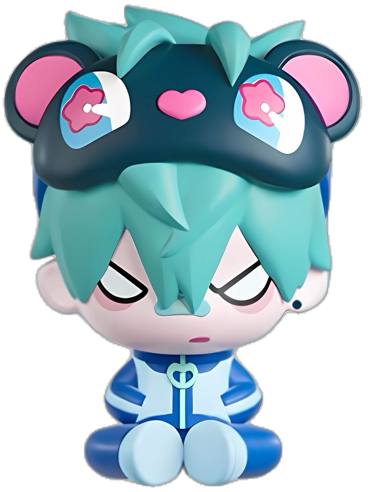
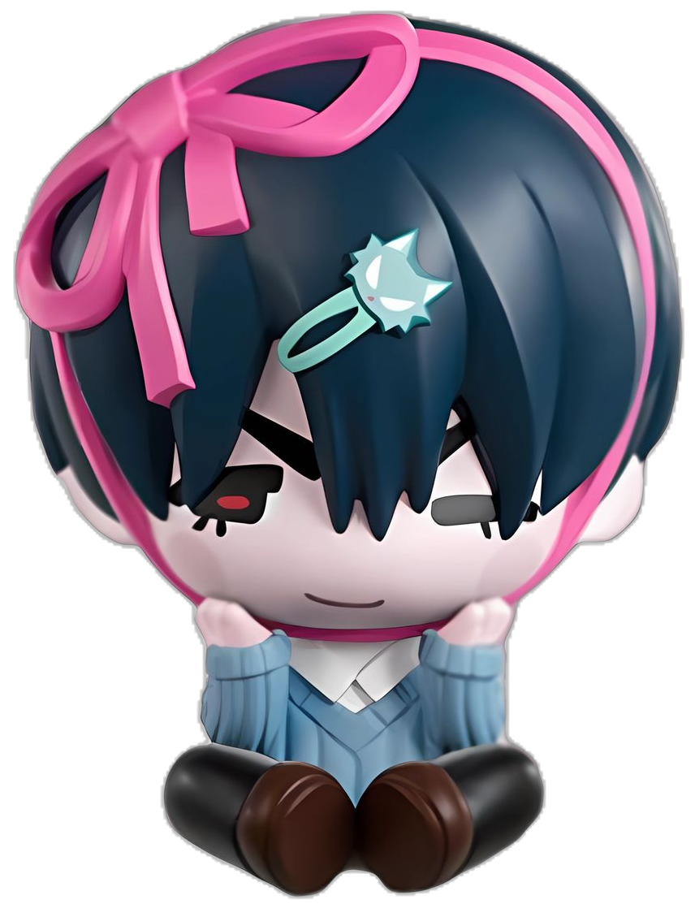
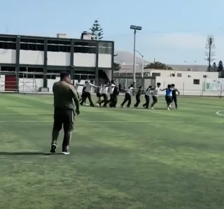
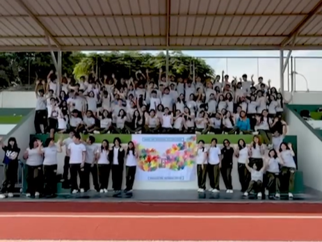
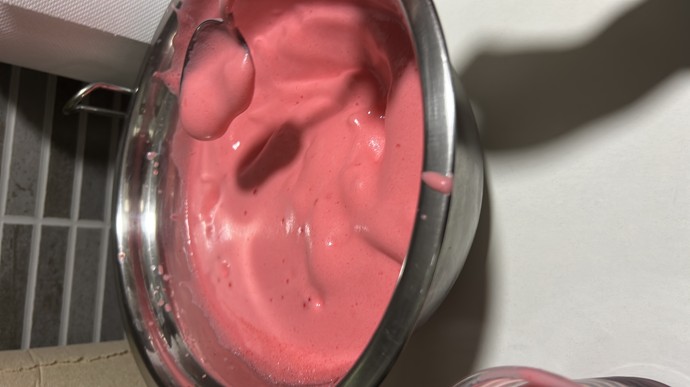
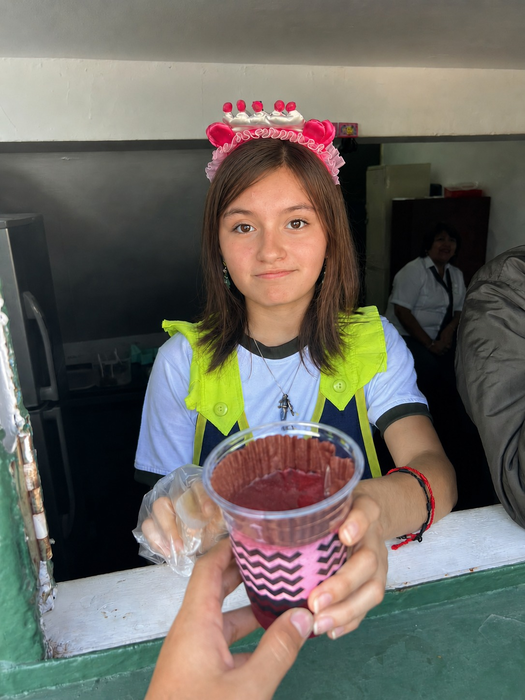
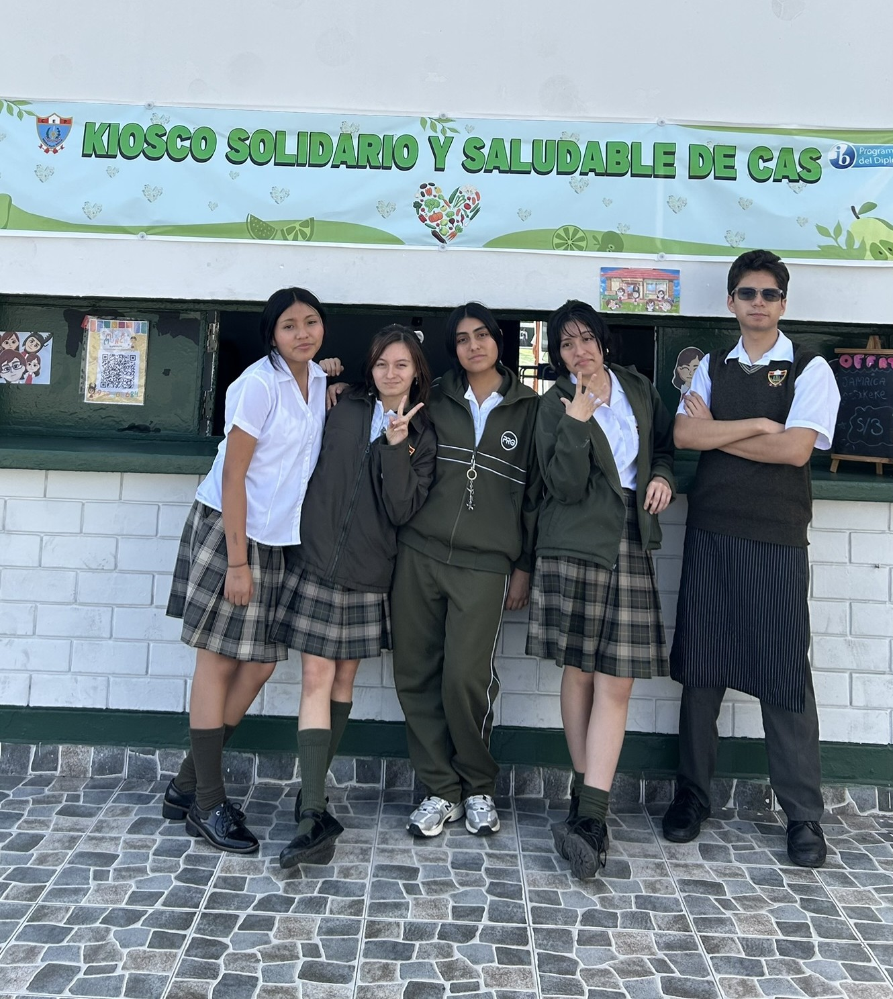
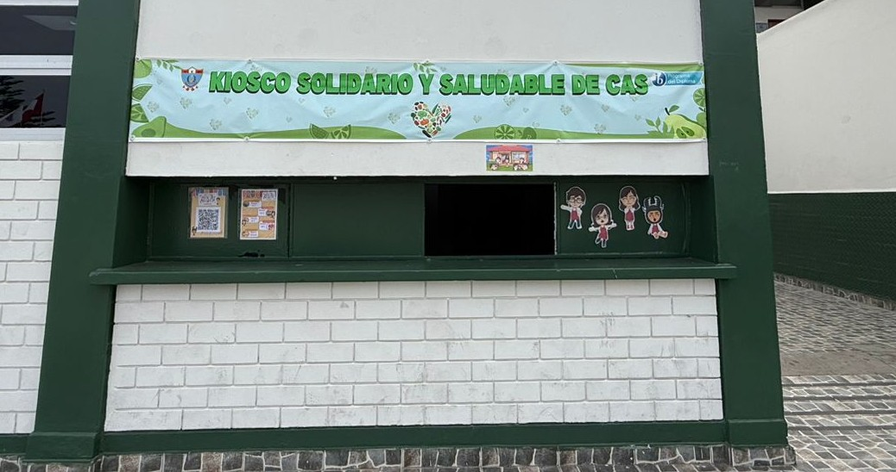

▶ 1. Experiencia CAS - Integracion

El evento de integración entre alumnos de 4to y 5to fue mi primera experiencia CAS como estudiante del DP1 y me sirvió como introducción a la comunidad más allá de mi propio grado. El objetivo principal del evento era fomentar la interacción, el trabajo en equipo y el sentido de pertenencia a través de una serie de juegos y actividades grupales. Esta actividad se vincula principalmente con el área de CAS: Actividad, ya que implicó participación física y dinámica, y con CAS: Servicio, al promover la integración y el apoyo entre estudiantes de diferentes promociones.
Durante todo el evento, el ambiente fue enérgico y dinámico, lo que ayudó a reducir la incomodidad y facilitó la interacción con los demás. Participar en los diferentes juegos requirió cooperación y adaptabilidad, ya que muchos trabajábamos con personas con las que nunca habíamos hablado antes. Si bien algunas actividades fueron divertidas, otras me sacaron de mi zona de confort. El juego de los zapatos, en particular, fue una experiencia desagradable debido al olor, y me disgustó mucho. Sin embargo, el hecho de haber decidido participar a pesar de esto me demostró la importancia del compromiso y la implicación, incluso cuando una actividad es incómoda o no resulta del agrado personal.

Un aspecto significativo del evento fue conocer a mis padrinos asignados. Fueron amables y accesibles, y su actitud hizo que la experiencia fuera de apoyo en lugar de abrumadora. Aunque no he mantenido un contacto constante con ellos, saber que estaban dispuestos a ofrecer orientación y consejos sobre el PD me tranquilizó. Sus sugerencias me ayudaron a sentirme más preparada y menos ansiosa ante los retos del DP1. A partir de esta experiencia, se desarrollaron varios resultados de aprendizaje de CAS, especialmente el de afrontar nuevos desafíos, al participar activamente en actividades que me resultaron incómodas, y el de trabajar de forma colaborativa con otros, al interactuar con estudiantes de otro grado. Asimismo, la actividad contribuyó al desarrollo de habilidades sociales y de comunicación, como la escucha activa, la cooperación y la adaptación a nuevas dinámicas de grupo. En cuanto a los atributos del IB, esta experiencia me permitió fortalecer principalmente los atributos de audaz, al salir de mi zona de confort; comunicadora, al interactuar con personas nuevas; y solidaria, al formar parte de una actividad que buscaba integrar y apoyar a otros dentro de la comunidad escolar. En general, el evento de integración cumplió su objetivo de fomentar la colaboración y el sentido de pertenencia, convirtiéndose en un punto de partida significativo para mi trayectoria en CAS, incluso si algunas partes fueron… traumáticas de cierta forma ૮(˶ㅠ︿ㅠ)ა
▶ Ver imagenes


▶ 2. Proyecto CAS - Kiosco Solidario y Saludable
Dɪᴀ 1 (ᐢ˙꒳˙ᐢ) El primer día del kiosco llegamos temprano para organizarnos antes de que empezara todo. Yo me encargué de descargar el cooler, ya que llevé gelatinas y gelatinas con espuma para vender. Desde el inicio, el día fue bastante bueno, tanto que terminamos generando alrededor de 240 soles, convirtiéndose en uno de nuestros mejores días de ventas. El equipo de MIX & MUNCH (nuestro nombre de kiosco) estaba conformado por Martín, Catarina, Avril y yo, y desde el comienzo se sintió una dinámica muy cómoda. Nos llevábamos bien, trabajábamos bien juntos y eso hizo que todo fluyera de manera más natural. Además, nuestro kiosco estaba tematizado con avatares que habíamos hecho de cada uno, lo que le dio un toque más personal y especial al proyecto, generando una conexión emocional con el espacio y con el trabajo que estábamos realizando. Para organizarnos mejor, decidimos tomarnos exactamente veinte minutos de la mañana(con todo y timer) para preparar el kiosco antes del inicio del día. Esta decisión nos ayudó bastante, ya que nos permitió estar listos con tiempo y evitar el estrés de última hora. Durante el recreo, intentamos mantener un ambiente alegre y cercano, usando vinchas de colores y haciendo que la experiencia fuera más amena tanto para nosotros como para quienes compraban. Sin embargo, a nivel personal, no empecé el día del todo bien. Algunos problemas con el Excel me generaron bastante estrés desde la mañana y no me sentía completamente cómoda. Esto afectó mi ánimo y, en un momento, siento que levanté la voz, algo que reconozco que no fue la mejor forma de manejar la situación. Esta experiencia me hizo darme cuenta de cómo el estrés puede influir en la forma en la que me comunico y en cómo reacciono frente a los demás. A pesar de eso, el día terminó de manera positiva. Logramos vender casi todos los productos y llegamos a hacer sold out de los brownies, que tuvieron muy buena aceptación. Hubo un pequeño problema con uno de ellos, pero logramos solucionarlo sin mayores complicaciones. En general, el primer día cerró bien y dejó una buena base para el resto de la semana.
Dɪᴀ 2 ꒰✿´ ꒳ ` ꒱ El segundo día fue distinto para mí, ya que no me tocaba estar en el kiosco. Decidí tomarme ese día para descansar y recuperar energía, algo que también era necesario después del primer día. Aun así, no me desconecté completamente de la actividad. Durante el segundo y el tercer recreo pasé a ver cómo les estaba yendo a mis compañeros. En el tercer recreo surgió un pequeño problema relacionado con la organización de la caja, ya que hubo una confusión sobre si podían turnarse o no. Finalmente, nos dimos cuenta de que lo más práctico era que una sola persona se encargara de la caja de manera constante, por lo que decidimos volver a ese sistema. El problema se resolvió rápidamente y sin mayores complicaciones. Ese día se logró el sold out de tres productos y, en general, las ventas fueron bastante buenas. Aunque no estuve directamente atendiendo, aproveché el tiempo para observar qué productos eran los más pedidos y qué buscaban más los clientes. Esta observación fue útil, ya que nos permitió tener una mejor idea de cómo organizarnos y qué priorizar en los días siguientes. En general, el segundo día fue un día de descanso para mí, pero también de aprendizaje desde otro rol, lo que me ayudó a aportar de una forma diferente al trabajo del equipo.
Dɪᴀ 3 ૮₍ˆ꜆･⩊-₎ა El tercer día empezó con algo de confusión, ya que pensábamos que iba a haber una inspección. Debido a que nos avisaron a última hora el día anterior, decidimos no llevar algunos de los productos que solían ser los más populares, como la pizza. Esto hizo que el día comenzara con cierta incertidumbre sobre cómo nos iba a ir. A pesar de eso, logramos vender bien otros productos. La fruta picada fue el producto más exitoso del día, junto con la gelatina. Estos productos funcionaron especialmente bien cuando los ofrecimos a los profesores, algo que personalmente disfruté muchísimo. Fue un miércoles muy agradable, y la experiencia de ir a vender directamente a los profesores fue una de las partes que más me gustaron de toda la semana. Hacer esta venta junto con mi compañero Martín fue muy positivo, ya que tenemos buena química y nos comunicamos bien. El hecho de poder acercarnos, conversar y ofrecer los productos de manera directa hizo que el ambiente fuera muy ameno y que la experiencia resultara divertida y natural. Para mí, esta parte del día fue definitivamente un 10 de 10. Aunque ese día no llegamos a hacer sold out de ningún producto, las ventas fueron buenas, alcanzando aproximadamente 191 soles, según el conteo de caja. En general, el día terminó siendo mejor de lo que esperábamos, incluso con los cambios y las limitaciones que tuvimos al inicio.
Dɪᴀ 4 (๑˃̵ᴗ˂̵)و El jueves fue un día bastante movido. No recuerdo todos los detalles con exactitud, pero sí tengo fotos y me acuerdo claramente de que hicimos un restock de gelatina con espuma, ya que se había convertido en el producto más pedido. Literalmente todos querían gelatina con espuma, así que, debido a la alta demanda, decidimos traer más para nuestro penúltimo día. La decisión funcionó muy bien y ese producto volvió a tener buena acogida. Ese día también estuve nuevamente en el kiosco, ya que pensábamos que iba a haber una inspección. Habíamos quedado en que Martín, Catalina y yo estaríamos presentes, así que me mantuve en el kiosco, aunque también estuve rotando y yendo a ofrecer productos a los profesores, como en días anteriores. Aun así, decidí tomarme algunos recreos fuera para descansar un poco y permitir que mis compañeras también pudieran trabajar con tranquilidad. Siento que, dentro de todo, fue un día en el que logré descansar un poco más, especialmente durante el tercer recreo, en el que no estuve tanto tiempo en el kiosco. Ese descanso me ayudó a no sentirme tan agotada y a manejar mejor el resto del día. Al final de la jornada, me llevé el dinero a casa para hacer el conteo, incluyendo los pagos por Yape. Además, decidí hacer una pequeña donación personal a la cuenta del kiosco, como aporte al trabajo que estábamos realizando como equipo. Ese día también tuvimos un pequeño problema con las cucharas, ya que no logré conseguirlas a tiempo. Afortunadamente, la miss nos ayudó trayendo cucharas y, durante esos días, también se encargó de enrollarlas en las servilletas. Realmente le agradezco mucho su apoyo, ya que su ayuda fue clave para que todo pudiera seguir funcionando sin problemas.
Dɪᴀ 5 ˊ̥̥̥̥̥ Ⱉ ˋ̥̥̥̥̥ El último día del kiosco fue muy emotivo para todos. Desde la mañana se sentía que era el cierre de algo importante: estábamos felices por haber llegado al final, pero también un poco tristes porque ya se terminaba. Nuestro kiosco estaba completamente tematizado con los avatares que habíamos hecho (los Miis), y ver todo armado por última vez fue muy especial. Durante el día estuvimos tomando fotos y disfrutando más el momento. Al final, cuando ya estábamos cerrando el kiosco, nos tomamos varias fotos juntos, en un ambiente muy cómodo y tranquilo. Personalmente, le tomé mucho cariño al equipo, y eso hizo que el cierre se sintiera aún más significativo. Ese día almorzamos dentro del kiosco y nos quedamos conversando con algunos clientes que se acercaban. Como era viernes y ya no había tanta gente, el ambiente fue mucho más relajado y ameno. Estuvimos Naomi, Catalina, Avril, Martín y yo, rotando en las tareas, hablando, comiendo y disfrutando del último día juntos en el kiosco. Al final, grabamos un video mientras sacábamos las cosas del kiosco y tomamos muchas fotos más. Nos encariñamos tanto con los muñequitos del kiosco que decidimos pegarlos en nuestros lockers como recuerdo de esta experiencia. Fue un gesto pequeño, pero con mucho significado. En general, el último día fue muy tranquilo. Me sentí en paz y satisfecha con todo lo que habíamos vivido durante la semana, y creo que fue un muy buen cierre para esta experiencia de CAS.
▶ Ver imagenes




▶ 3. Proyecto CAS - Souveniers de aniversario del colegio
A lo largo de este proyecto CAS, como equipo pasamos por varias etapas que nos permitieron aprender tanto del proceso como de nosotros mismos. Desde el primer día, cuando comenzamos con la planificación y el diseño de los separadores, nos dimos cuenta de que organizarnos bien y repartir responsabilidades era clave para que el proyecto funcionara. Tener claro qué materiales necesitábamos y quién se encargaba de cada tarea nos ayudó a avanzar, aunque no todo salió exactamente como lo habíamos planeado. Durante los días de impresión y preparación, enfrentamos algunos problemas, como la falta de hojas y el tiempo que tomó completar todas las impresiones. Esto nos obligó a ser más pacientes y a buscar soluciones para seguir avanzando sin frustrarnos. Más adelante, en el armado final, también surgieron dificultades, como problemas con los lapiceros y retrasos por olvidos, lo que afectó el cronograma. Sin embargo, estos errores nos ayudaron a darnos cuenta de la importancia de la responsabilidad individual dentro de un trabajo grupal. A pesar de estos imprevistos, el equipo supo adaptarse y apoyarse mutuamente. La comunicación fue fundamental para resolver los problemas y tomar decisiones rápidas cuando algo no salía como esperábamos. Además, recibir apoyo de otros compañeros, como el préstamo de materiales, nos mostró el valor de la colaboración y el trabajo conjunto dentro de la comunidad escolar. En general, este proyecto nos permitió desarrollar habilidades como la organización, la comunicación, la flexibilidad y la resolución de problemas. Más allá del producto final, lo más importante fue el proceso y lo que aprendimos como equipo. Esta experiencia CAS nos dejó aprendizajes que podremos aplicar en futuros proyectos, tanto académicos como personales, y nos ayudó a entender que trabajar en grupo implica compromiso, adaptación y apoyo mutuo..